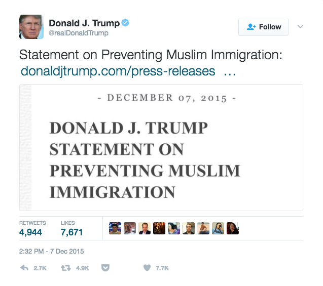
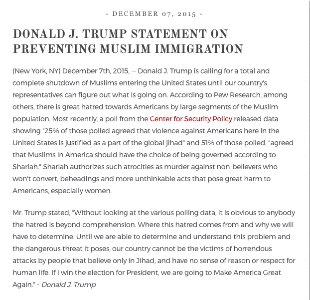

Immigration Under Trump
An update on US law, policy, and society
John Palmer and Mohammed El-Bachouti
Interdisciplinary Research Group on Immigration
Pompeu Fabra University, Barcelona
20 February 2017
Trump Campaign
Mexican Rapists Statement
When Mexico sends its people, they're not sending their best. . . . They're bringing drugs. They're bringing crime. They're rapists. And some, I assume, are good people.
-- Donald Trump, 16 June 2015 speech announcing candidacy.
Response to Anti-Hispanic Violence
The homeless man was lying on the ground, shaking, when police arrived early Wednesday. His face was soaked, apparently with urine, his nose broken, his chest and arms battered.
Police said two brothers from South Boston ambushed the 58-year-old as he slept outside of a Dorchester MBTA stop, and targeted him because he is Hispanic. One of the brothers said he was inspired in part by GOP presidential candidate Donald Trump.
Police said two brothers from South Boston ambushed the 58-year-old as he slept outside of a Dorchester MBTA stop, and targeted him because he is Hispanic. One of the brothers said he was inspired in part by GOP presidential candidate Donald Trump.
-- Boston Globe, 19 August 2015.
Response to Anti-Hispanic Violence
Told of the attack . . . Mr. Trump said at a news conference late Wednesday that it was the first he had heard of it.
“It would be a shame,” Mr. Trump said, before adding: “I will say that people who are following me are very passionate. They love this country and they want this country to be great again. They are passionate.
“It would be a shame,” Mr. Trump said, before adding: “I will say that people who are following me are very passionate. They love this country and they want this country to be great again. They are passionate.
-- NYT, 20 August 2015.
Anti-Muslim Statements
Hey, I watched when the World Trade Center came tumbling down. And I watched in Jersey City, New Jersey, where thousands and thousands of people were cheering as that building was coming down. Thousands of people were cheering.
-- Donald Trump, 19 November 2015 campaign rally.
Muslim Ban
Muslim Ban
Muslim Ban
Trump Team
Chief Strategist: Stephen K. Bannon
Chief Strategist: Stephen K. Bannon
I think anger is a good thing. This country is in a crisis. And if you’re fighting to save this country, if you’re fighting to take this country back, it’s not going to be sunshine and patriots. It’s going to be people who want to fight.
-- Bannon quoted by Atlantic, 24 August 2016.
Chief Strategist: Stephen K. Bannon
Let the grassroots turn on the hate because that’s the ONLY thing that will make them do their duty.
-- 2014 email from Bannon to Breitbart editor, published by Daily Beast
Trump Team
Senior Policy Advisor: Stephen Miller

Senior Policy Advisor: Stephen Miller
The powers of the president to protect our country are very substantial and will not be questioned.
-- 2014 email from Bannon to Breitbart editor, published by Daily Beast
Trump Team
Attorney General: Jefferson Beauregard Sessions III

Trump Team
Secretary of Homeland Security: John Kelly

Trump Executive Orders
EO 13767: Border Security and Immigration Enforcement Improvements
- Border wall
- Increased detention
- 5,000 additional border patrol agents
- State roll in enforcement
- Stricter credible fear interviews
EO 13768: Enhancing Public Safety in the Interior of the United States
- Drastically expands enforcement priorities
- Civil fines and penalties
- 10,000 additional ICE officers
- State roll in enforcement
- WIthholding federal funds from sanctuary jurisdictions
EO 13776: Task Force on Crime Reduction and Public Safety
EO 13769: Foreign Terrorist Entry
- Temporary ban on entry for nationals of designated countries
- Temporary ban on all refugee admissions
- Indefinite ban on Syrian refugee admissions
- Reduction in refugee admissions to 50,000
- Priority to refugees who are religious minorities